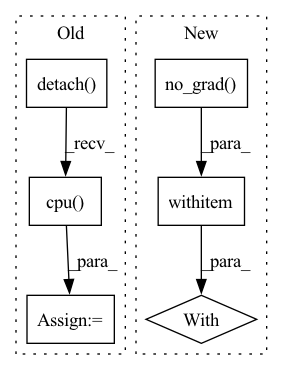

Pattern ID :28906
Before Change
//compute policy and ent loss
policy_loss = ((self.alpha * new_curr_state_log_pi) - new_min_curr_state_q_value).mean()
policy_loss_value = policy_loss.detach().cpu() .numpy()
if self.automatic_entropy_tuning:
alpha_loss = -(self.log_alpha * (new_curr_state_log_pi + self.target_entropy).detach()).mean()After Change
reward_batch = reward_batch * self.reward_scale
curr_state_q1_value = self.q1_network(torch.cat([obs_batch, action_batch],dim=1))
curr_state_q2_value = self.q2_network(torch.cat([obs_batch, action_batch],dim=1))
with torch.no_grad() :
next_state_action, next_state_log_pi = \
itemgetter("action_scaled", "log_prob")(self.policy_network.sample(next_obs_batch))
next_state_q1_value = self.target_q1_network(torch.cat([next_obs_batch, next_state_action], dim=1))In pattern: SUPERPATTERN
Frequency: 3
Non-data size: 6
Instances Fragment ID: 84958774
Project Name: x35f/unstable_baselines
Commit Name: fd650918d0f96ab53625afed362025e5a53c10a6
Time: 2022-06-13
Author: 1621322691@qq.com
File Name: unstable_baselines/baselines/sac/agent.py
M Class Name: SACAgent
N Class Name: SACAgent
M Method Name: update(2)
N Method Name: update(2)
M Parent Class: BaseAgent,torch.nn.Module
N Parent Class: BaseAgent,torch.nn.Module
M File Name: unstable_baselines/baselines/sac/agent.py
N File Name: unstable_baselines/baselines/sac/agent.py
M Start Line: 78
M End Line: 139
N Start Line: 78
N End Line: 131
Before Change
output_tc = self.teacher(data)
// TODO: Find an elegant way to free the feature map and computation graph
output_tc = torch.tensor(output_tc.detach().cpu() .numpy()).cuda()
output_st = self.student(data)
supervised_loss = self.criterion(output_st, target)/self.accumulation_stepsAfter Change
for batch_idx, (data, target) in enumerate(self.train_data_loader):
data, target = data.to(self.device), target.to(self.device)
with torch.no_grad() :
output_tc = self.teacher(data)
// TODO: Find an elegant way to free the feature map and computation graph
//output_tc = torch.tensor(output_tc.detach().cpu().numpy()).cuda()
Fragment ID: 84958775
Project Name: lehduong/knowledge-distillation-by-replacing-cheap-conv
Commit Name: 7b28b7ea3d6766ff87845d80d5bdc6ef5165cf58
Time: 2020-01-22
Author: oopsxilitol@gmail.com
File Name: trainer/trainer.py
M Class Name: TrainerTeacherAssistant
N Class Name: TrainerTeacherAssistant
M Method Name: _train_epoch(2)
N Method Name: _train_epoch(2)
M Parent Class: BaseTrainer,BaseKnowledgeDistillationTrainer
N Parent Class: BaseTrainer,BaseKnowledgeDistillationTrainer
M File Name: trainer/trainer.py
N File Name: trainer/trainer.py
M Start Line: 182
M End Line: 184
N Start Line: 182
N End Line: 187
Before Change
self.fixed_noise = latent_optimise(self.fixed_noise, self.fixed_fake_labels, generator, self.dis_model, self.latent_op_step, self.latent_op_rate,
self.latent_op_alpha, self.latent_op_beta, False, self.second_device)
fake_images = generator(self.fixed_noise, self.fixed_fake_labels).detach().cpu()
plot_generated_samples_path = join("figures", self.run_name, "[{}]generated_samples.png".format(step))
plot_img_canvas(fake_images, plot_generated_samples_path, self.logger)
self.writer.add_images("Generated samples", (fake_images+1)/2, step)
After Change
////////////////////////////////////////////////////////////////////////////////////////////////////////////////////////////////////////////////////////////////////////////////////////////////////////////////////////////////////////////////////////////////
def evaluation(self, step):
with torch.no_grad() :
self.logger.info("Start Evaluation ({step} Step): {run_name}".format(step=step, run_name=self.run_name))
is_best = False
self.dis_model.eval() Fragment ID: 84958776
Project Name: postech-cvlab/pytorch-studiogan
Commit Name: 377ddfbcde84e74b93720eff17aea1877117b623
Time: 2020-07-20
Author: first287@naver.com
File Name: trainer.py
M Class Name: Trainer
N Class Name: Trainer
M Method Name: evaluation(2)
N Method Name: evaluation(2)
M Parent Class:
N Parent Class:
M File Name: trainer.py
N File Name: trainer.py
M Start Line: 489
M End Line: 542
N Start Line: 493
N End Line: 543